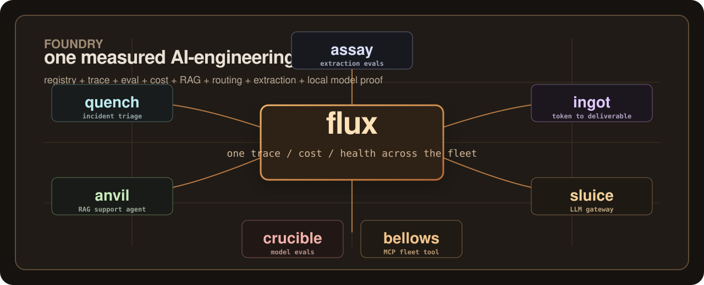

Foundry
One suite, eight measured AI-engineering systems.
Foundry is the AI suite at *.zaakir.io.
Flux binds the fleet together with trace, cost, registry, and eval health.
Quench and Anvil are agent nodes. Ingot accounts for tokens against delivered work.
Sluice routes model calls, Assay proves extraction with per-field evals, and the
Crucible/Bellows pair measures and operates the local-inference fleet.

The lineup
The suite is arranged as a fleet, not a pile of demos. Each product owns one job and exposes enough evidence for a skeptical reader to audit it.
How to read it
Start with the system-level pane, then follow the evidence down into the agents, evals, cost accounting, and model-internals niche.
- 01Flux
The keystone. It shows the fleet as one operational system instead of separate repos.
- 02Quench and Anvil
The live agent nodes. One handles incident triage; the other grounds answers in real docs.
- 03Ingot and Sluice
The economics layer: what tokens bought, and how requests route under cost and reliability constraints.
- 04Assay and Crucible
The eval story: per-field document extraction and model-level behavior measurement.
- 05Bellows
The local-fleet MCP tool: your coding agent operates the self-hosted model fleet through typed tool calls.
evals engineering anvil, assay, crucible agent orchestration quench, anvil, flux MCP artifact bellows, anvil surface RAG metrics anvil cost accounting ingot, sluice, flux observability flux, sluice, quench reliability boundaries quench HITL, sluice breaker local model specialist crucible, bellows
Foundry is the front door of the suite. The product repos remain the source of truth.